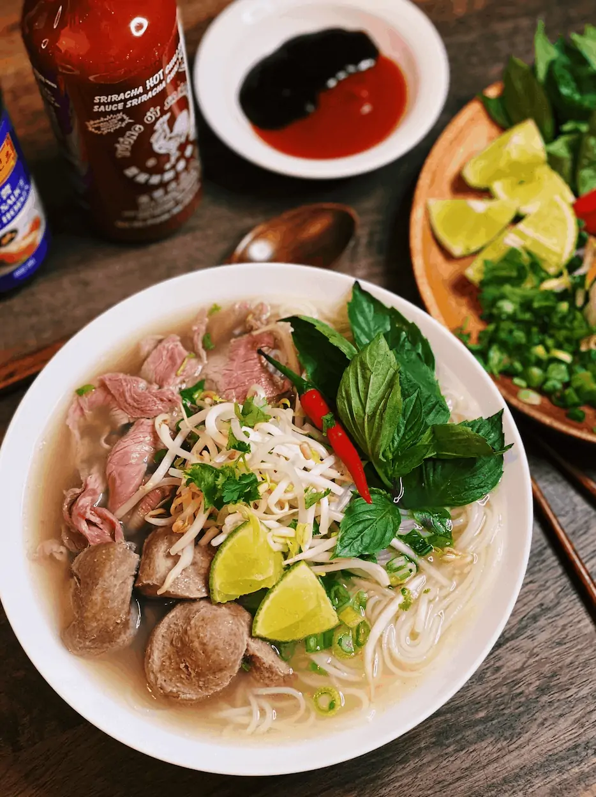

Pho

DESCRIPTION :
Pho is a soup consisting of bone broth, rice noodles, thinly-sliced meat (in this recipe, it's beef), and fresh garnishes.
INGREDIENTS :
- Beef Soup Bones:Use the shank and knee to make the homemade bone broth.
- Rice Noodles: You should be able to find dry rice noodles at most grocery stores, either in the international aisle or another pantry aisle.
- Beef: This recipe calls for beef top sirloin. Make sure it's thinly sliced so the hot broth can cook it.
- Fish Sauce: Fish sauce will give the pho a hint of salty, fishy flavor.
- Onion: Roast the onions for an extra depth of flavor.
- Spices and Seasonings: This recipe calls for ginger, star anise, and salt.
- Garnishes: Garnish your pho with cilantro, green onion, Thai basil, lime, hoisin sauce, sriracha, or anything else you like.
STEPS :
- Roast the beef bones and onions until the bones are browned and the onions are soft.
- Make the broth.
- Soak the rice noodles for an hour. Meanwhile, bring the broth to a simmer.
- Boil the noodles, then drain and add them to a bowl.
- Top with sirloin, cilantro, green onion, and broth. Garnish with your desired toppings.